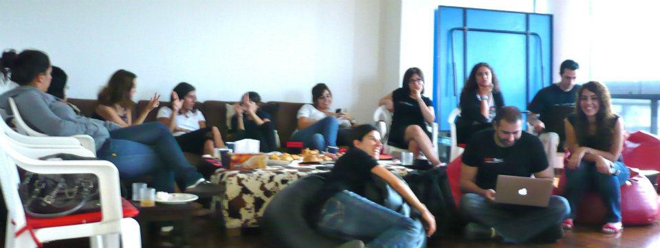

Youssef  Chaker
Chaker


 Follow @ychaker
Follow @ychaker
Anyone looking for an agile coach/web developer? Contact me #Lebanon #MENA #agile #development #web
— Youssef Chaker (@ychaker) February 23, 2012
best quote ever: "What's the fucking ROI of your mother?" never gets old.. cc @garyvee
— Youssef Chaker (@ychaker) February 23, 2012
As of yesterday (thx @LebaneseVoices 4 pointing this out) Im a walking billboard If u want something advertised u can give me a shirt 2 wear
— Youssef Chaker (@ychaker) February 13, 2012
University of Virginia, School of Engineering and Applied Science, Charlottesville, VA Degree: B.S. Computer Engineering, Class of 2008
Thesis: Designing and Building an Energy Responsible Data Center
Certifications: UNIX Essentials Featuring the Solaris 10 Operating System (SA-100-S10)

Programming Languages: C, C++, C#, Java, JavaScript, Python, PHP, Ruby, VHDL, x86 Assembly
Tools and Applications: Eclipse, FPGA Advantage, Mathcad, MATLAB, PSpice, Visual Studio
Development Methodologies: Agile, Scrum, Test Driven Development, Behavior Driven Development

MADISON COUNTY SCHOOLS
Consulted with Madison County Director of Information Technology on moving to a virtualized server environment to reduce server footprint and costs.
Wrote a technology road map for the County advising specific steps on how to go about the transition to a “greener” data center using virtualization technologies and “in the cloud” solutions for critical services such as email and document collaboration.
Feedback from the client: “We're kicking some serious butt with VM now - got VSphere running, shut down exchange and went to Google Apps for Education, and turned off a total of like 10 servers. I think we're down to 4 from 15 as of 18 months ago. I'm VERY happy. Getting LEAN!”
Revamped, as part of 6 person team, a 10 year old platform for science oriented press release management firm to manage handle increasing site traffic and publish to new Web 2.0 style media outlets.
- Ported legacy PHP code to the Zend MVC framework
- Implemented search functionality using the Solr search engine for over 90,000 press releases with complex business rules driving PR release visibility in search results
- Sophisticated, responsive user interface via AJAX elements
- Improved the user interface in parts of the site
- Practiced and evangelized Test Driven Development (TDD) and Agile methodologies with the Newswise in-house development team
- Wrote a Ruby script to import legacy data to a new data base


- Implemented a scanner application on a Windows Mobile 6 platform in .NET to scan event tickets at venues
- Integrated reporting functionality to the scanner application
- Developed communication process between scanner and server to ensure updated information
- Reengineered the TicketFly user accounts application using Grails to serve a central independent OAuth service provider to other TicketFly applications
- Wrote a WordPress plugin to serve as a OAuth consumer of the TicketFly API
- Integrated the Facebook Graph API functionality into the user accounts application


WORKWORLDWEB
Developed a web based version of the Virginia Commonwealth University WorkWorld desktop application using Ruby on Rails. Implemented an easy and flexible admin interface that allows the VCU team to create and manage questions and question groups to be displayed to users according to specific display rules. Developed a workflow engine similar to a state machine for questions and their groups with a behavior dependent on the user's input and previously saved answers. Over 200 RSpec and Cucumber tests verify the workflow engine.
Administrators can embed Ruby code while creating questions in order to setup context specific display rules that rely on users' answers, as well as provide numerical results after completion of the workflow.
WorkWorld was an Agile project using Scrum for scope management and leveraging Test Driven Development to ensure code quality.
Rails Rumble 2008
- app name: Azimuth
- app idea: Treasure Hunt using Web 2.0
- app specifics: Location aware, SMS integration, gaming
Rails Rumble 2010
- app name: Deprecate Me
- app idea: Help the Ruby Open Source community track deprecated gems
- app specifics: Grease Monkey script that could be installed on Firefox to place a mark on a github page for a gem
Agile Coaching and Training
- Member of the AgileCville group
- Best Practices Workshop: slides, day one video, day two video
Longest Domain Name?
Maybe not! But working for clients, the recurring theme is 'CMS'. As a Ruby guy, I wanted to find something to replace Drupal, Wordpress and Joomla in the Ruby sphere. So I documented what I did on this Jeckyll blog:
http://whichrubycmsshouldiuse.com/

Open Source
ZeepIt
ZeepIt is a Rails 2.3.x plugin that leverages the zeep-messaging gem to create the models, controllers, and views required to get your app ready to use the Zeep Mobile SMS service.
Repository link: https://github.com/ychaker/zeep_it
Sample Apps
Useful 3.x apps that include the following an Accounts app that works as an oauth provider. Allows other applications to connect using Oauth and retrieve user information through the API and a Consumer App that interfaces with the account app.
Repository link: https://github.com/ychaker/sample_apps
Multi Recipient Threaded Messages
A Rails 3.x plugin (soon to be gem) that provides basic private messaging functionality between the users of a site, with multi recipient capabilities.
Repository link: https://github.com/ychaker/multi_recipient_threaded_messages
Solr
Solr is an open-source search server based on the Lucene Java search library. It is a very powerful tool but that has a steep learning curve and requires configuration in XML files.
Solr link: http://lucene.apache.org/solr
So...
How Can We Make this Easier?
In the Ruby world, a couple of plugins/gems exist to help ease the pain. One of them is acts_as_solr.
Repository link: https://github.com/mattmatt/acts_as_solr
But the Ruby CMS world had not made use of that so I created a Radiant CMS extension based on acts_as_solr
Repository link: https://github.com/ychaker/radiant-acts_as_solr-extension
But...
acts_as_solr was basically abandoned when another leader was introduced, which is the sunspot gem along with sunspot-rails.
Repository link: https://github.com/sunspot/sunspot
Sunspot Admin
Yet again, using sunspot only gave developers a DSL and an interface to Solr but they still had to understand the underlying system to get it to work. Knowing the pain of it and how most basic application need a simpler plug and play solution, I created Sunspot Admin which makes managing Solr Search using the Sunspot gem easier. The purpose of this plugin is to provide an admin interface for non-technical people and allow for: Selecting which application models/attributes to index through a simple interface, manual reindexing, and starting the Solr server through the web admin.
Repository link: https://github.com/ychaker/sunspot_admin
Sunspotify
What I had done in Sunspot Admin was then extracted out and cleaned up into a better Rails plugin (the aim was then to make this a Radiant extension as well), called Sunspotify. It also gave default behavior for the search page with the ability to customize the views.
Repository link: https://github.com/ychaker/sunspotify
Sunspotify came with a cool admin interface
This,
Was implemented where more than 80% of it was pure HTML5 and CSS3, without any images.

A Sample
As a sample, what's on the left is done purely with HTML5 and CSS3.
NO IMAGES!
Isn't that cool? :)
Demo
I've setup a semi-functional demo for you to play around with (semi-functional because it uses a web service called Web Solr, that limits some functionality).
Demo link: http://sunspotify-demo.heroku.com/

CTO
Virginia, Marrakech, Beirut, London, Paris, Santiago (Start-Up Chile)
Ruby 1.9.2 -> Ruby 1.9.3
TDD, BDD (RSpec, Cucumber), Heroku, Linode, Janrain, Postmark, New Relic, Woopra, KISSmetrics, 37signals suite

Watch my Arabnet 2012 pitch here
My boy @ychaker went all patriotic on us :D good luck amigo #ArabNetME
— Liliane A (@FunkyOzzi) March 29, 2012
“@amghattas: وهلق لوين ! ختام رائع لفكرة رائعه خجوله #arabnetme” cc. @ychaker
— Layal Gebrane (@iPr1ncess) March 29, 2012
He is Youssef Chaker and he rocks @ychaker #arabnetme
— Abir G (@AbirGhattas) March 29, 2012
@ychaker you humbled us today. excellent delivery and passion :)
— Samer Karam (@SamerKaram) March 29, 2012